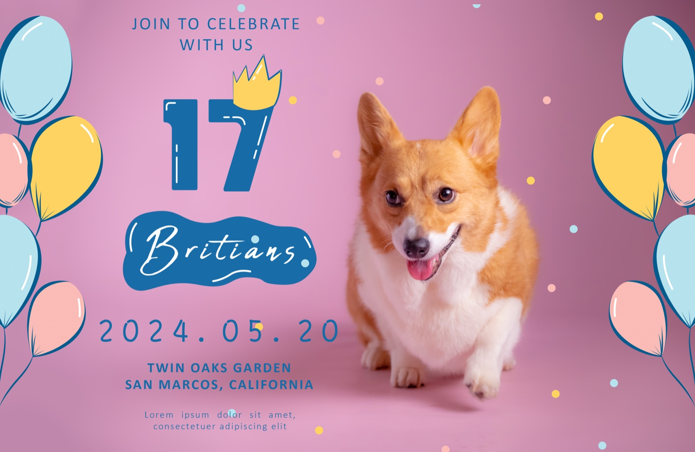
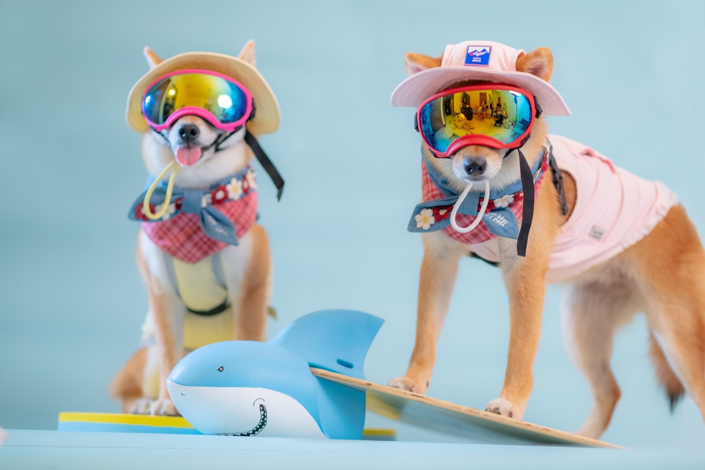
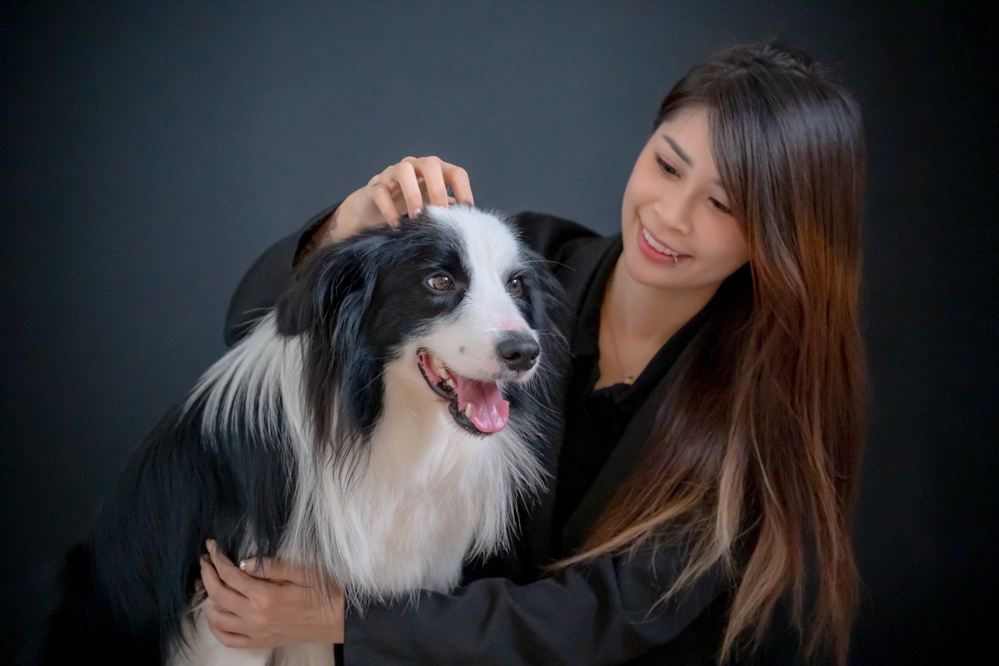

派對活動｜預約制
寵物聚會
寵物友善的森林系聚會與生活感拍攝，適合毛孩生日、同好小聚與家庭日。
適合的情境
- 毛孩生日、寵物聚會、朋友同好聚
- 親子＋毛孩一起的家庭日
- 草地互動、奔跑動態、自然抓拍
場地特色
寵物友善
草地活動空間、自然場景拍攝；可搭配簡單道具與佈置。
拍攝氛圍自然
生活感互動為主，照片全給（含基本調色，非毛片）。
費用參考
| 方案 | 費用 | 說明 |
|---|---|---|
| 寵物攝影 | NT$3,800 起 | 半小時起；至少 50 張以上，含基本調色。 |
| 加購｜精修 | NT$380 / 張 | 人物／毛孩精修（依需求加購）。 |
| 純場地小聚 | 4 小時 NT$6,800 | 不含攝影服務；可加購活動拍照。 |
照片參考




FAQ（簡短）
可以主人入鏡嗎？
可以。基本建議一隻毛孩＋兩位主人或家庭兩大兩小；加人每人 NT$800。
需要準備什麼？
可帶毛孩喜歡的零食/玩具；若要慶生可自備蛋糕或裝飾。